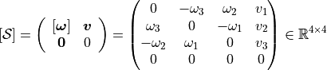

pytransform3d.transformations.check_screw_matrix¶
- pytransform3d.transformations.check_screw_matrix(screw_matrix, tolerance=1e-06, strict_check=True)[source]¶
Input validation for screw matrix.
A screw matrix consists of the cross-product matrix of a rotation axis and a translation.

- Parameters:
- screw_matrixarray-like, shape (4, 4)
A screw matrix consists of a cross-product matrix that represents an axis of rotation, a translation, and a row of zeros.
- tolerancefloat, optional (default: 1e-6)
Tolerance threshold for checks.
- strict_checkbool, optional (default: True)
Raise a ValueError if [omega].T is not numerically close enough to -[omega]. Otherwise we print a warning.
- Returns:
- screw_matrixarray, shape (4, 4)
A screw matrix consists of a cross-product matrix that represents an axis of rotation, a translation, and a row of zeros.
- Raises:
- ValueError
If input is invalid